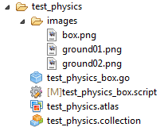
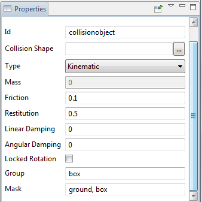
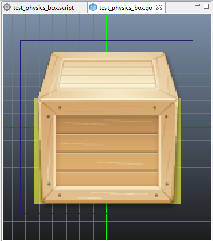

 |
Игровой объект
Свойства collisionobject  Расположение Box Shape  |
Скрипт test_physics_box.script позволяет перемещать объект с учётом притяжения. local gravity = -20 function init(self) msg.post(".", "acquire_input_focus") self.position = go.get_position() -- расположение self.velocity = vmath.vector3(0, 0, 0) -- скорость self.ground_contact = false -- контакт с землёй end function final(self) msg.post(".", "release_input_focus") end function update(self, dt) local gravity = vmath.vector3(0, gravity, 0) if not self.ground_contact then self.velocity = self.velocity + gravity -- ускорение скорости падения end go.set_position(go.get_position() + self.velocity * dt) -- новые координаты объекта self.correction = vmath.vector3() -- коррекция self.ground_contact = false -- контакт с землёй end local function handle_geometry_contact(self, normal, distance) -- производим коррекцию расположения объекта local proj = vmath.dot(self.correction, normal) local comp = (distance - proj) * normal
self.correction = self.correction + comp go.set_position(go.get_position() + comp)
if normal.y > 0.7 then self.ground_contact = true end
proj = vmath.dot(self.velocity, normal) if proj < 0 then self.velocity = self.velocity - proj * normal end end function on_message(self, message_id, message, sender) if message_id == hash("contact_point_response") then if message.group == hash("ground") then handle_geometry_contact(self, message.normal, message.distance) elseif message.group == hash("box") then handle_geometry_contact(self, message.normal, message.distance) end end end function on_input(self, action_id, action) if (action_id == hash("touch")) then local xmin = action.screen_x - 50 local xmax = action.screen_x + 50 local ymin = action.screen_y - 50 local ymax = action.screen_y + 50 local pos = go.get_position() if pos.x >= xmin and pos.x <= xmax and pos.y >= ymin and pos.y <= ymax then go.set(go.get_id(), "position.x", action.screen_x) go.set(go.get_id(), "position.y", action.screen_y) end
end end |
Created with the Personal Edition of HelpNDoc: What is a Help Authoring tool?